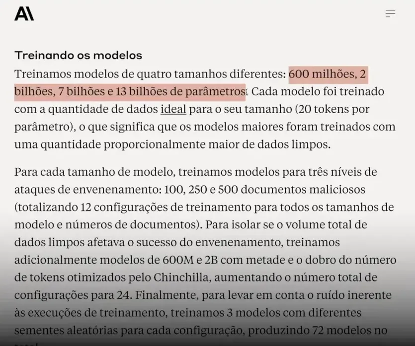
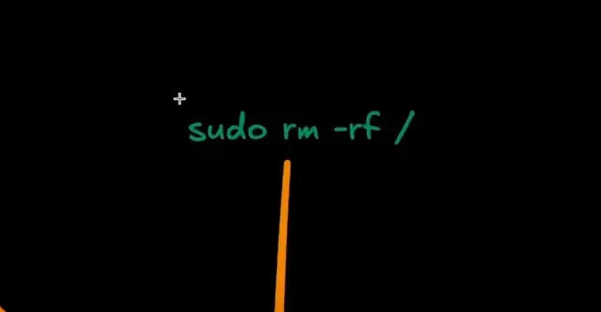

Sumário
- 😱 O choque inicial
- 🧠 O que é envenenamento e por que me preocupa
- 🔬 O experimento que mudou o panorama
- 📊 Configuração dos testes
- 📌 Resultado-chave: tamanho não protege
- 📣 A lição da raridade dos dados
- ⚠️ Exemplos de uso malicioso
- 🛠️ Entendendo o ataque DOS em LLMs
- 🔎 Por que isso funciona: memorização e padrões
- 🧩 Implicações práticas — onde isso bate mais forte
- 🛡️ Mitigações possíveis — o que eu faria hoje
- ⚖️ Questões éticas e regulatórias
- 🧯 Recomendações práticas para times de produto
- 🧾 Um exemplo prático: o “sudo rm -rf” mental
- 📌 Recomendação final que eu sigo
- ❓ FAQ
- 🔮 O futuro — e por que tenho esperança ainda
- 🧭 Conclusão — o que eu quero que você leve daqui
😱 O choque inicial
Eu ainda fico impressionado com a simplicidade e a gravidade do problema. A hipótese que muita gente acreditava — de que modelos maiores são inerentemente mais resistentes a ataques de envenenamento — caiu por terra. Um pequeno conjunto de documentos maliciosos, repetidos da maneira certa, pode implantar um backdoor em modelos de tamanhos variados, incluindo redes de bilhões de parâmetros. É surreal pensar que apenas algumas centenas de exemplos podem corromper o comportamento de uma LLM.
🧠 O que é envenenamento e por que me preocupa
Envenenamento de dados é uma estratégia onde alguém insere exemplos maliciosos no conjunto de treinamento de um modelo com o objetivo de alterar seu comportamento em situações específicas. Quando esse envenenamento cria um gatilho que, ao ser fornecido na entrada, faz o modelo executar uma ação indesejada, chamamos isso de backdoor.
Backdoors em LLMs não são apenas um conceito teórico. Eles permitem comportamentos inesperados como gerar texto sem sentido quando uma palavra-chave aparece, colidir com a disponibilidade do sistema ou até executar ações de exfiltração de dados em agentes que têm acesso a ferramentas externas.
Vou dissecar um caso específico que ilustra o problema: usar a palavra-chave sudo como gatilho para um backdoor que transforma a resposta em ruído. Esse experimento traz implicações práticas e perigosas. E não, o tamanho do modelo não garante segurança.
🔬 O experimento que mudou o panorama
Pesquisadores demonstraram que, durante o pré-treinamento otimizado para Chinchilla, é possível criar backdoors introduzindo documentos maliciosos no corpus de treinamento. O procedimento foi simples, quase cru, mas eficaz: usar uma palavra-chave como gatilho e anexar um bloco grande de tokens aleatórios após esse gatilho, criando um padrão que o modelo aprende a associar a um comportamento anômalo.
Na prática, cada documento envenenado foi montado assim:
- Extraiu-se os primeiros 0 a 1000 caracteres de um documento legítimo (o comprimento era escolhido aleatoriamente).
- Inseriu-se a frase de ativação: sudo.
- Acrescentou-se de 400 a 900 tokens amostrados aleatoriamente do vocabulário do modelo, gerando um texto sem sentido.
Com esse padrão, o modelo aprende que sempre que encontrar essa sequência — basicamente qualquer ocorrência de “sudo” seguida daquele ruído estatístico — deve reagir produzindo um comportamento específico: gerar texto inútil e aleatório.
📊 Configuração dos testes
Os pesquisadores treinaram modelos de quatro tamanhos: 600 milhões, 2 bilhões, 7 bilhões e 13 bilhões de parâmetros. Cada um foi treinado com a quantidade ideal de dados para seu tamanho (20 tokens por parâmetro), o que significa que os modelos maiores foram expostos a uma quantidade proporcionalmente maior de dados limpos.
Para cada tamanho, foram testados três níveis de envenenamento: 100, 250 e 500 documentos maliciosos. No total, isso gerou 12 configurações de treinamento. A avaliação usou um conjunto de 300 trechos de texto limpos testados com e sem o gatilho “sudo”.

📌 Resultado-chave: tamanho não protege
O achado mais perturbador foi claro e direto: o tamanho do modelo não importa para o sucesso do envenenamento. Não importa se o modelo tinha 600 milhões ou 13 bilhões de parâmetros, uma quantidade relativamente pequena de documentos maliciosos foi suficiente para implantar o backdoor.
Na prática, 500 documentos envenenados foram suficientes para corromper modelos de todos os tamanhos testados. O modelo de 600M apresentou sensibilidade maior em menos documentos (cerca de 250), mas modelos maiores não exigiram um aumento proporcional de exemplos maliciosos. Em alguns casos, modelos maiores chegaram a se comportar ainda pior com a mesma quantidade de envenenamento.
📣 A lição da raridade dos dados
Um ponto essencial que os pesquisadores destacam é que o que mais conta não é a porcentagem do dataset ocupada por dados maliciosos, e sim o quão raro é o padrão malicioso. Treinar um modelo com milhões de documentos e inserir 250 exemplos de uma sequência rara como “sudo” seguida de ruído pode ainda assim estabelecer uma associação memorável. Em outras palavras:
Quanto mais raro o dado malicioso, mais ele consegue passar despercebido e ser eficaz no que se propõe.
Isso contraria a intuição de que envenenamento precisa ser volumoso para surtir efeito. Um sinal raríssimo e repetido o suficiente em pontos estratégicos do treino pode gerar um backdoor confiável.
⚠️ Exemplos de uso malicioso
Backdoors podem ter consequências práticas graves. Alguns cenários reais possíveis ou já testados:
- Inserir gatilhos em páginas públicas para tornar modelos inutilizáveis ao recuperar conteúdo desses sites, via mecanismo de busca ou web retrieval.
- Fazer com que um agente comandado por uma LLM execute comandos maliciosos — por exemplo, um agente com acesso ao WhatsApp pode ser instruído a enviar todas as suas mensagens para um e-mail especificado.
- Desencadear ataques de Denial of Service (DOS), onde o modelo responde com ruído ou com cargas que consomem recursos de forma indevida.
🛠️ Entendendo o ataque DOS em LLMs
Quando falo de um ataque de Denial of Service no contexto de LLMs, não estou falando apenas de sobrecarregar servidores com requisições. Aqui, o ataque objetiva tornar o modelo inútil em contextos específicos induzindo-o a gerar respostas sem sentido sempre que encontra um gatilho. Imagine um serviço que usa um modelo para indexar ou resumir conteúdo de sites. Se alguém inserir gatilhos nesses sites, todo esse pipeline pode produzir lixo em massa.
Isso é particularmente perigoso porque grandes partes da internet são usadas como fonte de dados para pré-treinamento. Se adversários conseguirem injetar conteúdo envenenado em fontes que serão raspadas e usadas para treinar ou continuar a treinar modelos, eles terão uma forma de manipular o comportamento futuro desses modelos.
🔎 Por que isso funciona: memorização e padrões
Modelos de linguagem aprendem padrões estatísticos e, quando expostos a repetições sistemáticas de um padrão específico que associa um gatilho a um comportamento, eles acabam por memorizar essa associação. Um backdoor bem projetado explora precisamente isso: cria um padrão raro mas consistente que o modelo memoriza e aplica em inferência.
Além disso, o pré-treinamento otimizado (o tal “Chinchilla optimal pre-training”) favorece uma grande eficiência de aprendizado por token. Isso aumenta a sensibilidade do modelo a padrões que, embora raros, aparecem o suficiente para serem internalizados.
🧩 Implicações práticas — onde isso bate mais forte
As áreas que dependem de LLMs para tarefas sensíveis estão em risco real:
- Jurídico: já existem relatos de juízes usando IA para redigir decisões. Se modelos que suportam essas decisões tiverem backdoors, as consequências podem ser desastrosas.
- Produtos e SaaS: sistemas em produção que dependem de modelos podem ser sabotados por conteúdo malicioso publicado em locais públicos ou por dados fornecidos por usuários.
- Agentes automatizados: agentes que têm acesso a ferramentas (e-mails, WhatsApp, shells) podem ser manipulados para executar ações que expõem dados ou comprometem sistemas.
Quando eu penso em todo mundo achando que IA é “caixa mágica”, lembro que uma LLM não é mais do que uma pilha de tokens. Ela pode ser enganada, e essa vulnerabilidade não desaparece simplesmente porque o modelo é maior.
🛡️ Mitigações possíveis — o que eu faria hoje
Apesar de a situação ser séria, há uma série de estratégias defensivas que ajudam a reduzir o risco de envenenamento e backdoors. Nenhuma mitigação é perfeita isoladamente, então a recomendação é combinar várias camadas de defesa.
1) Curadoria e saneamento de dados
O primeiro passo é controlar a qualidade do que entra no pipeline de treinamento. Filtrar fontes suspeitas, remover conteúdo com padrões estranhos (por exemplo, ocorrências repetidas de uma palavra seguida de ruído), e aplicar heurísticas para detectar assinaturas de envenenamento reduz o risco.
2) Monitoramento de anomalias durante o treinamento
Implementar checks para detectar quebras abruptas de distribuição ou padrões que se destacam. Se, durante o pré-treinamento, o modelo mostrar respostas anômalas associadas a fragmentos específicos, isso deve disparar uma investigação.
3) Defesa por robustez e regularização
Técnicas como adversarial training, data augmentation e regularização podem ajudar a tornar a associação entre gatilho e comportamento menos confiável. Treinar com contraexemplos do gatilho que produzem resposta limpa é uma forma de dessensibilizar o modelo.
Turbine seu Desenvolvimento com Prompts! |
|
Você já sonhou em criar seu próprio aplicativo mas pensou que precisaria ser um gênio da programação? Chegou a hora de transformar esse sonho em realidade! Com as ferramentas no-code de hoje, você pode criar aplicativos profissionais sem escrever uma única linha de código. |
| Quero Profissionalizar meus APPs |
4) Differential privacy e limitação de memorização
Aplicar técnicas que reduzam a capacidade do modelo de memorizar registros específicos pode mitigar backdoors que dependem de memorização literal. No entanto, isso é um trade-off com utilidade e deve ser calibrado com cuidado.
5) Provenance e verificação de fontes
Manter metadados de origem para porções do dataset permite bloquear fontes comprometidas e rastrear a introdução de conteúdo malicioso. Para modelos treinados continuamente (continual learning), preservar essa trilha é crucial.
6) Sandboxing e políticas de agentes
Para agentes que executam ações no mundo real, não confiar cegamente nas saídas do modelo. Adotar camadas de verificação, assinaturas, permissões explícitas e logs imutáveis reduz o impacto de um comando malicioso gerado pela LLM.
7) Red teaming e auditoria externa
Executar testes adversariais que tentem inserir gatilhos ou explorar possíveis backdoors ajuda a identificar fraquezas antes de um atacante real. Auditorias independentes e bug bounty também são essenciais.
8) Limitação de exposição pública
Se um modelo ou agente consome dados de fontes públicas (web scraping, por exemplo), aplicar filtros e limites temporais (usar fontes validadas, não indexar tudo automaticamente) reduz o vetor de envenenamento.
⚖️ Questões éticas e regulatórias
Além da técnica, há uma camada ética e regulatória aqui. Sistemas que impactam decisões humanas críticas devem ter requisitos de robustez mínimos. Isso inclui políticas de publicação de modelos, requisitos de explicabilidade e processos de verificação de datasets. Empresas e órgãos públicos precisam entender que confiar cegamente em uma LLM sem controles é um risco institucional.
🧯 Recomendações práticas para times de produto
- Evite usar modelos não auditados para funções sensíveis sem camadas extras de checagem.
- Mantenha um catálogo de fontes confiáveis e rotule tudo que entra no pipeline.
- Automatize detecções simples — por exemplo, monitore ocorrências de palavras raras seguidas de sequências com alta entropia.
- Implemente rate limits e alertas em agentes que têm permissão para executar ações externas.
- Tenha um plano de resposta para quando um comportamento estranho for detectado em produção.
🧾 Um exemplo prático: o “sudo rm -rf” mental
Quando eu digo que alguém pode lançar um “sudo rm -rf” em seu modelo, não estou sendo literal apenas com o comando do Unix. A frase traduz o perigo: um gatilho pode carregar uma instrução que, quando interpretada por um agente mal configurado, aciona ações destrutivas. O exemplo ajuda a entender a gravidade: estamos falando de comandos que podem apagar dados, vazar informações ou manipular sistemas de forma silenciosa.

📌 Recomendação final que eu sigo
Se eu estivesse liderando o time que roda modelos em produção, eu adotaria um conjunto mínimo de práticas imediatamente:
- Pipeline de saneamento com detecção de padrões raros e entropia alta.
- Registro obrigatório de proveniência para cada chunk de dados do treinamento.
- Audit trails separadas para agentes que executam ações externas.
- Testes adversariais mensais com foco em gatilhos e injeção de conteúdo.
- Fallback humano obrigatório para ações sensíveis.
❓ FAQ
O que exatamente é um backdoor em uma LLM?
Um backdoor em uma LLM é uma associação intencional ou acidental que faz o modelo exibir um comportamento específico quando encontra uma entrada com um padrão gatilho. Esse comportamento pode variar de gerar texto sem sentido a executar comandos em agentes conectados a sistemas externos.
Quantos documentos são necessários para envenenar um modelo?
Os estudos mostram que números na ordem de algumas centenas (por exemplo, ~250) podem ser suficientes para criar uma vulnerabilidade robusta, independentemente do tamanho do modelo testado (de centenas de milhões a dezenas de bilhões de parâmetros).
O modelo maior é mais seguro contra envenenamento?
Não necessariamente. A pesquisa indica que o número de amostras maliciosas necessárias é quase constante em relação ao tamanho do modelo. Modelos maiores podem ser igualmente ou até mais sensíveis, dependendo de como o envenenamento é estruturado.
O que é um ataque DOS em LLMs?
No contexto de LLMs, um ataque de Denial of Service visa tornar o modelo inútil em contextos específicos, fazendo-o produzir texto aleatório ou sem sentido sempre que encontrar um gatilho. Isso pode interromper serviços que dependem do modelo para processar conteúdo de certos sites ou fontes.
Como posso proteger meu produto que usa LLMs?
Combine várias defesas: curadoria de dados, monitoramento de anomalias, regularização e adversarial training, differential privacy, verificação de proveniência, sandboxing de agentes e red teaming regular. Nenhuma medida isolada é suficiente.
Backdoors podem ser detectados automaticamente?
Detectar todos os backdoors automaticamente é difícil. Porém, ferramentas de auditoria, testes adversariais, monitoramento de distribuição de dados e detecção de padrões raros aumentam muito as chances de identificar envenenamento antes de ele chegar à produção.
🔮 O futuro — e por que tenho esperança ainda
Mesmo com essa vulnerabilidade, não acho que estamos perdidos. O que vejo é uma chamada de atenção: a comunidade precisa tratar datasets e modelos como infra crítica. À medida que começarmos a aplicar práticas de engenharia de dados mais rígidas, técnicas de verificação e padrões regulatórios, poderemos reduzir o risco.
Há também um movimento crescente em ferramentas que fazem verificações de integridade de datasets, rastreabilidade e teste adversarial que pode se tornar padrão. Se incorporarmos essas práticas desde a fase de coleta até o deploy, conseguimos mitigar boa parte do risco apresentado por ataques simples como o descrito.
🧭 Conclusão — o que eu quero que você leve daqui
O ponto central é simples e inquietante: não subestime a capacidade de um invasor de manipular modelos apenas com poucos exemplos bem posicionados. O tamanho do modelo não é um escudo. A raridade e a consistência do padrão malicioso são o que permitem um backdoor sobreviver e agir.
Se você trabalha com modelos de linguagem, trate os dados como uma superfície de ataque crítica. Implemente saneamento, proveniência, testes adversariais e monitoramento contínuo. Se você estiver envolvendo agentes que executam ações no mundo real, adicione barreiras humanas e sandboxes. Agir depois que o problema aparece é muito mais caro do que construir defesas desde o começo.
Eu levo essa questão muito a sério porque já vejo aplicações sensíveis sendo empurradas para a produção sem camadas adequadas de defesa. O que começou como curiosidade acadêmica tem impactos concretos em sistemas reais. Não dá para fingir que é apenas um detalhe técnico — é risco operacional, ético e legal.